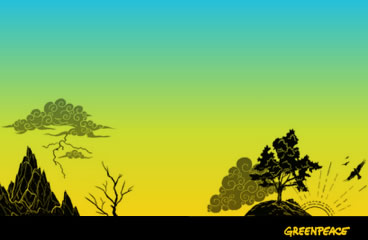
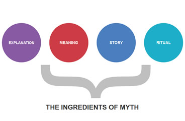
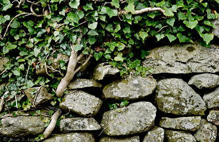

Practical Exercises
These step by step guides can help you understand and apply the 7 Shifts with your colleagues in meetings and workshops.
Understanding the Shifts
Applying the Shifts
Shift Specific Activities
the 7 Shifts
| FROM | TO | |
| Symptoms | Root Causes | |
| Reinforcing Old Stories | Building New Ones | |
| Secretive | Open Source | |
| Fearing Failure | Fearless Innovation | |
| Lone Hero | Hero Among Heroes | |
| Supporters | Change Agents | |
| Dogmatic Defender | Champions of the Impossible |
Courage Inside Out
Did you know that the word, “courage” used to mean something entirely different than it does today? “Courage” is a heart word - ‘cor‘ is the Latin word for 'heart'. It meant,
“To speak one’s mind by telling all one’s heart.”
We propose there are six kinds of courage: physical, moral, intellectual, social, emotional and spiritual courage. We’ll need all of these for a lifetime of activism and to cultivate wholehearted activism. They’re not entirely separate and they can’t work in isolation. Different kinds of courage may blend with others in a specific moment of action, they’re interlaced and mutually reinforcing. So every act, no matter what shape or size is worthwhile. Every act is important because courage, of any kind, is contagious.
Being courageous: You are in the Arena
‘Arena’ conjures majesty and awe: the stage is set, throngs of people in the stands waiting for the action to begin. But the arena is any moment when you risk showing up and being seen, when you may need to summon the ‘cor’ in courage. The arena is not for those coolly mocking and eyeball-rolling in icy detachment from the stands. Wholehearted is a full contact sport for those who put skin in the game; it will expose those who haven’t found their courage yet.
- Leading a team at work is the arena.
- Getting on the dance floor and busting a crazy move is the arena.
- Asking for help is walking into the arena.
- A tricky parenting moment puts you in the arena.
- Voicing an unpopular opinion always gets you in the arena.
When we don’t meet the expectations we’ve set for ourselves, we’re face down, disappointed in the arena. Calling out unfairness, standing up for what you truly believe, standing by someone who is not being heard thrusts you squarely into the arena and throws the spotlights.
These are some rules of engagement for when we’re in the arena: Authenticity, Imagination, Curiosity, Resilience, Connection, Empathy. If we practice them (and they will take practice), our courage muscles get stronger.
Learn MoreShift Decks
the Reading Deck
The Seven Shifts Reading Deck is a collection of slides that explain why Greenpeace developed the seven shifts and what each of the shifts would look if we were living in an ideal world.

the 7 Shifts in Action
This brief deck includes examples from the Greenpeace community of each shift in action. It shows how different campaigns were designed and launched to embody the new story of Greenpeace.
Mythic Success
This deck created by Jonah Sacs will help you explain what Myth Gaps are and which myths Greenpeace can use in campaigning and storytelling. See the video here for an explanation to help you plan your talk.
Creating Abundance
Understand that there are potential resources and partners all around us. Learn how to see potential sources of resources for our work, understand and talk to potential partners as we reframe our own resources.
{kind=link}